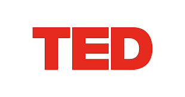

Video
TED

미국의 비영리 재단에서 운영하는 강연회 TED의 컬렉션. 로봇 관련 다양한 비디오 플레이리스트와 강연, 아티클을 모아놓은 사이트
Kate Darling : Why we have an emotional connection to robots
POND5 - Robotics curated collection
로열티 프리 미디어를 지향하는 글로벌 비디오 저작권 콘텐츠 분야 내 최고 기업 POND5의 온라인 로봇공학 컬렉션. 인간과 기계의 공생 관계를 담은 영상이 주를 이루고 있음.
Video Library
자동화 기업 WMH Robotics에서 운영하는 비디오 라이브러리. 로봇의 다양한 측면과 여러 응용 프로그램에서의 적용을 담고 있음.
Robotpark ACADEMY
세계 최대 로봇공학 리소스 홈페이지라고 소개하고 있으나 권위 확인이 어려움. 별도 인증 없이 로봇 관련 다양한 영상 시청 가능